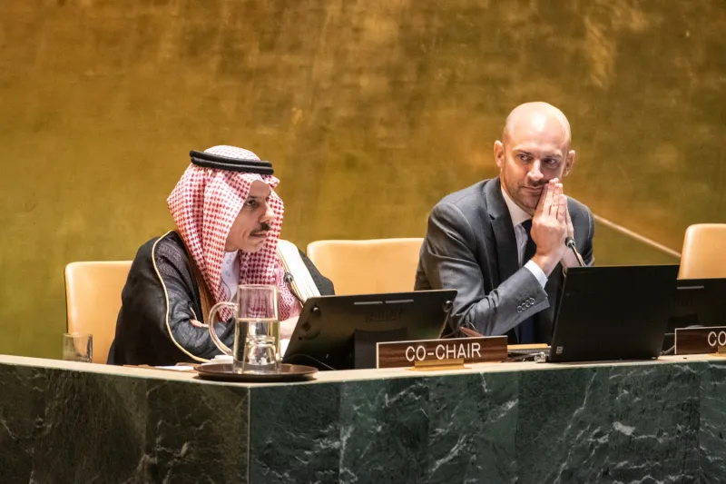

The UN Human Rights Council's determination that Israel's actions constitute genocide marks a significant escalation in international response to the Israeli-Palestinian conflict, with far-reaching implications for global justice and peace efforts.

The United Nations addresses the Israeli-Palestinian conflict with proposed solutions following genocide determination.
In September 2025, the United Nations Human Rights Council concluded that Israel's actions in Gaza since October 2023 constitute genocide. This determination marks a significant escalation in the international community's response to the ongoing Israeli-Palestinian conflict, which has persisted for decades and has seen repeated cycles of violence, displacement, and humanitarian crises. The humanitarian situation in Gaza, in particular, has drawn global attention due to severe shortages of food, medical supplies, and basic infrastructure, affecting over two million people. This paper examines the UN's findings, explores diverse perspectives from governments, experts, and affected populations, and considers the implications of this designation for international law, conflict resolution, and global stability. It also considers the proposed solutions suggested by the UN to address the crisis and prevent further horrors.
The UN's Independent International Commission of Inquiry executed an extensive two-year investigation into events in Gaza, focusing on actions taken by Israeli authorities since October 2023. The commission examined thousands of witness testimonies, satellite images, and reports from human rights organizations. On September 16, 2025, the commission released its report, concluding that Israel's conduct in Gaza meets the criteria of genocide. The report highlighted deliberate actions that targeted the destruction of the Palestinian population, including mass killings, forced displacement, and the destruction of homes, hospitals, and schools.
The report also emphasized the use of starvation as a weapon of war. Severe restrictions on food, water, and medical supplies were noted as deliberate measures that intensified the humanitarian crisis, leading to malnutrition, disease, and death. The commission documented numerous incidents where civilians, including children and the elderly, were unable to access essential services, underlining a systematic pattern of oppression and violence. This evidence formed the basis for the UN's formal recognition of the events as genocide under international law.
In response to these findings, the UN issued urgent calls for international intervention. On May 7, 2025, UN experts released a statement urging states to act decisively to end the violence in Gaza and prevent further loss of life. The statement stressed the responsibility of all member states under the Genocide Convention to prevent and punish acts of genocide. Additionally, the UN proposed practical measures for mitigating the humanitarian crisis, including the establishment of safe corridors for aid delivery, immediate termination of hostilities, and the start of international investigations into reported war crimes.
The UN's proposals also included recommendations for a long-term political solution. These measures emphasized dialogue between Israel and Palestinian authorities, supported by international mediators. The goal is to achieve a durable resolution that addresses the central political, territorial, and security issues, while ensuring accountability for human rights violations. By combining immediate humanitarian relief with long-term diplomatic strategies, the UN aims to prevent further escalation and establish a system for sustainable peace.
Palestinian representatives have largely welcomed the report, viewing it as a long-overdue acknowledgment of their suffering and as a critical step toward international recognition of their situation. The State of Palestine formally addressed the UN General Assembly on April 23, 2025, calling for urgent global action to halt the ongoing genocide and for measures that guarantee the protection of civilians in Gaza.
Israel has strongly rejected the UN's findings, describing them as biased and politically motivated. Israeli officials argue that their military operations are legitimate responses to ongoing security threats posed by militant groups in Gaza. They claim that the UN's report does not fully account for the provocations that led to these military actions or the complexities of a heavily populated conflict zone.
International reactions have been mixed. Human rights organizations and several countries have expressed strong support for the UN's findings, calling for accountability, sanctions, and potential legal action against perpetrators. Others have urged caution, emphasizing that unilateral measures could worsen the situation or undermine broader peace efforts.
The UN's designation of genocide has significant legal, diplomatic, and humanitarian implications. Under the Genocide Convention, member states are legally obligated to prevent and punish acts of genocide, which may lead to increased pressure on Israel through sanctions, diplomatic measures, or international legal proceedings. Failure to address the situation risks empowering other states to violate international norms, potentially undermining the credibility of the global legal system and the UN's authority.
In the short term, the designation may exacerbate tensions in the Middle East and further divide the international community. However, in the long term, it could trigger a reevaluation of how the international community addresses armed conflicts, human rights violations, and genocide prevention. The UN's proposed solutions, combining immediate humanitarian interventions with structured political dialogue, highlight the potential approaches to a sustainable resolution.
The key conclusion is that decisive global action is essential to defend justice, protect civilian populations, and prevent similar atrocities in the future. The ongoing situation in Gaza serves as a critical test of the international community's ability to enforce human rights and respond effectively to crimes of such magnitude.
Experts in international law highlight the significance of the UN's genocide designation as a precedent for global accountability but note that translating this designation into effective action remains a challenge. The determination represents a watershed moment in international law enforcement and could establish new standards for humanitarian intervention and conflict resolution.
BBC. (2025, August 8). Israel and the Palestinians: History of the conflict explained. BBC. https://www.bbc.com/news/articles/ckgr71z0jp4o
Nicholls, C. (2025, September 16). UN commission says Israel is committing genocide in Gaza. CNN. https://www.cnn.com/2025/09/16/middleeast/israel-gaza-genocide-un-commission-report-intl
Sutherland, C. (2025, September 16). Israel Has Committed Genocide in Gaza, Says U.N. Commission of Inquiry. TIME. https://time.com/7317574/israel-gaza-genocide-united-nations-commission-inquiry-report/
UN Human Rights Council. (n.d.). OHCHR | The United Nations Independent International Commission of Inquiry on the Occupied Palestinian Territory, including East Jerusalem, and in Israel. OHCHR. https://www.ohchr.org/en/hr-bodies/hrc/co-israel/index
UN Human Rights Council. (2025, September 24). HRC Home. OHCHR. https://www.ohchr.org/en/hrbodies/hrc/home
UN News. (2025, August 27). UN calls for decisive steps to end conflict as Gaza and West Bank crises deepen. UN News. https://news.un.org/en/story/2025/08/1165729
United Nations. (1948). Convention on the Prevention and Punishment of the Crime of Genocide. United Nations. https://www.un.org/en/genocideprevention/documents/atrocity-crimes/Doc.1_Convention%20on%20the%20Prevention%20and%20Punishment%20of%20the%20Crime%20of%20Genocide.pdf
United Nations. (2022). Definitions of Genocide and Related Crimes | United Nations. United Nations. https://www.un.org/en/genocide-prevention/definition
United Nations. (2025a, May 7). End unfolding genocide or watch it end life in Gaza: UN experts say States face defining choice - Question of Palestine. Question of Palestine. https://www.un.org/unispal/document/un-experts-statement-07may25/
United Nations. (2025b, September 12). General Assembly Endorses New York Declaration, Charting Path to Palestinian Statehood | Meetings Coverage and Press Releases. Un.org. https://press.un.org/en/2025/ga12707.doc.htm
Andrea Pérez Rodríguez is a journalism intern specializing in international law, human rights, and Middle Eastern affairs. With extensive research experience in conflict analysis and humanitarian crises, she brings comprehensive coverage to complex geopolitical issues affecting global stability.
Share this article